← 返回阅读库 · 原论文目录
论文讲解阅读文档 · 新模型 · v089
RetNet A Successor to Transformer for Large Language Models[2307.08621]
视频时长 00:24:48；讲解文字 11,445 字符；提取讲解画面 105 张。按视频原顺序阅读，每段文字保留时间戳。
文字来自整段视频的自动语音转写，按自然停顿分段，并与 PPT / 论文页面 / 演示画面对齐。未将讲解压缩为摘要；术语、数字和口述公式请结合画面及原论文核对。 阅读稿已校正规范部分明确术语误识别；原始逐字稿和每处修改记录另行保留。
讲解画面为源视频截图（640×360），不是可编辑 PPT 文件。全片按每秒 2 帧扫描内容变化，逐步展开页保留；连续动画保留代表画面。清晰度受源视频限制。
下载完整资料包 · 含离线 HTML、PDF、Word、全部 PPT 画面和字幕。
原论文与材料
Retentive Network: A Successor to Transformer for Large Language Models · 下载完整 PDF（14 页）
按时间阅读
00:00:00–00:00:23 · 画面 001
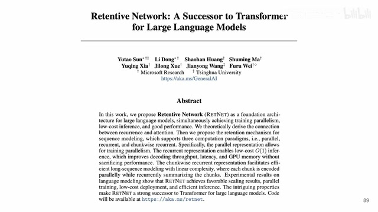
00:00:00–00:00:23 · 画面 001大家好,今天我们来快速说一篇论文 Retentive Network, a successor to Transformer for Large Language Models 这一篇就是 RedNet 致力于更改 Transformer 里面的 self-attention 来达到节约资源来处理更长的序列的这么一个目的那么在继续之前呢，还是要先声明，本人没有任何 NLP 相关的背景知识。第二呢，就是这个视频呢，会尽量按照作者呈现的这个思路，把里面一些没有必要的细节也梳理清楚。所以，如果你只是需要想要把这个模型跑起来，想要知道大概的流程，网上有很多更精简的视频。好的，那么我们开始。
00:00:23–00:00:39 · 画面 002
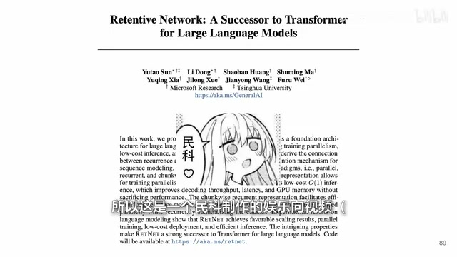
00:00:23–00:00:39 · 画面 00200:00:39–00:00:41 · 画面 003
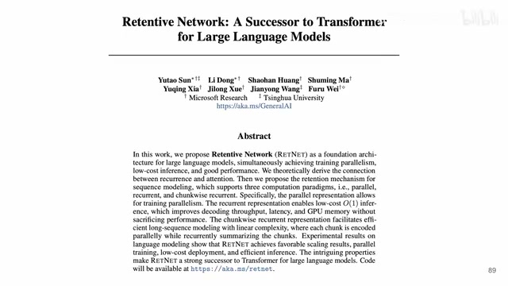
00:00:39–00:00:41 · 画面 003那么 Transformer 是用来处理一个序列的，那么这个序列呢，一般是一个 Vector 的序列。那么一个 Vector 呢，我们叫它 Token。那么 Token 的数量它这么表示，每一个 Token 它的尺寸，也就是这个 Vector 的长度就是 Dmodal。对于每一个 Transformer Encoder 来说，它包含两个部分，一个是这个 Multi-Head Self-Attention，另一个呢是这个 Feed-Forward Network，本质上是一个 MLP。
00:00:41–00:01:38 · 画面 004
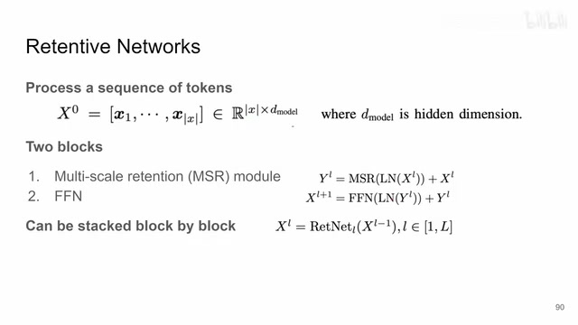
00:00:41–00:01:38 · 画面 004那么当然，它的瓶颈就是在于 attention 嘛。所以本文致力于用这个 multi-scale，确切的说是 gated multi-scale retention 来替换原有的 attention，来达到一个节约资源处理长序列的目的。那么当然呢，transformer 原来也是一层叠一层的，你的序列过了 transformer 之后它的尺寸是不变的。那么你现在在 retinite 里面换了 attention。
但是它的网络的结构依然不变。那么你还是什么样的尺寸的序列进来，什么样的尺寸的序列就出去了。那么这个呢，是本文和 transformer 的联系。那么很明显的就是，我们要来看它的这个 retention 到底是怎么设计的。那么 retention 既然是为了替换 attention，那它这里肯定也是处理一个序列的这个 token。那么这里呢，字母的上标是 encoder 的层数，那么字母的下标呢是这个 token 它的这个 index。
00:01:38–00:01:42 · 画面 005
00:01:38–00:01:42 · 画面 00500:01:42–00:01:43 · 画面 006
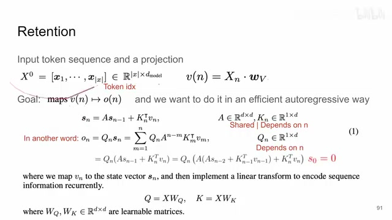
00:01:42–00:01:43 · 画面 00600:01:43–00:03:43 · 画面 007
00:01:43–00:03:43 · 画面 007那么这里 retention 的目的和 attention 一样，都是想把一系列的这个 token 变换到另一个系列。但是你做 attention 的时候，它是所有的 token 都参与运算，随着你的序列的增长，你的运算量也不断的增加。但是呢，我们在真正做模型语言生成的时候，它其实是一个 token 一个 token 来生成的，它是一个 autoregressive 的方法。
所以本文的核心就围绕着我如何设计一种让它非常契合 autoregressive 的方法，也就是当我想生成一个新的 token 的时候，我不用费力的把之前的所有的 token 都召唤出来再重新做一遍计算。这是它的核心的思想。本人这样的思想，我们来看这里作者维护了一个内部的状态叫做 S，它的下标就是这个 token 的 index。那么我希望这个 S 当一个 state 也好，你当它一个 memory 也好。
它会随着你每新加入的一个 token 而更新，而你生成新的 token 的过程又依赖于这个状态。那么这样一种设计，作者写成了这两个式子的形式。我们来看，那么首先对于一个你输入的 token 来说，先做一个投影。attention 里面的 query key value 里面的 value 做一个投影，投出来这个 n 呢就是代表这个 token 的 index。那么每当有新的 token 到来的时候，作者想首先更新一下我当前的状态。怎么更新呢，你的原来的状态乘以一个矩阵 a，加上你的新的这个 token 乘上一个矩阵 k。那么更新完它之后呢，你再用当前的这个状态乘上一个矩阵 q 来得到你输出的这个 token。
它就是从一个你当前 token 这个 XN 投影到这个 VN 一直到它的输出 ON 这样一个映射。这是一个很直接的设计，这是一个很直接的设计。那么在这个设计的基础上你就不断的迭代。那么 ON 和 SN 也就是 VN 的关系是这样的，跟之前的一个 token 是什么样子呢，再往前倒又是什么样子呢，对吧？你把这个式子打开就写成这个样子，你继续打开就继续写。
00:03:43–00:03:54 · 画面 008
00:03:43–00:03:54 · 画面 00800:03:54–00:03:56 · 画面 009
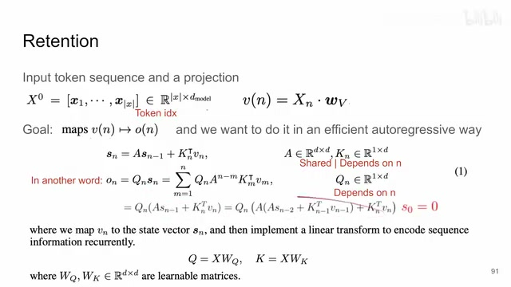
00:03:54–00:03:56 · 画面 009一直写写写写到最后就可以写成这个形式，注意这里作者并没有提，但是实际上你需要写它来使得它更严谨。就是最一开始那个 S0，它其实是取值取了 0，也就是说最一开始第一个 token 进来的时候你是没有这一项的。这个呢，就是作者一个最开始的思路，借鉴了这个 recurrent neural network，那么当然你按照 self-attention 的说法
00:03:56–00:04:06 · 画面 010
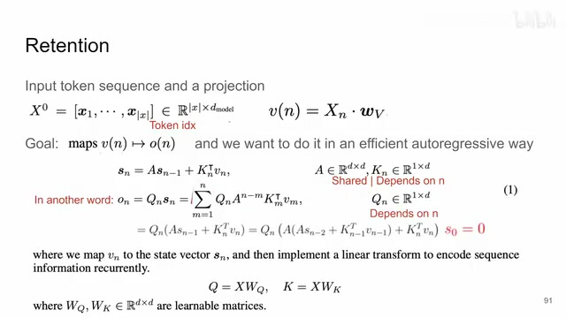
00:03:56–00:04:06 · 画面 01000:04:06–00:04:07 · 画面 011
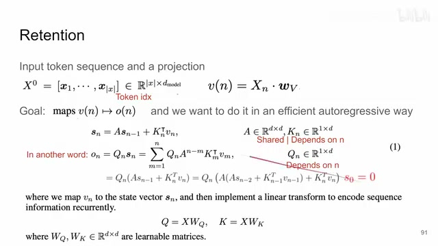
00:04:06–00:04:07 · 画面 01100:04:07–00:04:33 · 画面 012
00:04:07–00:04:33 · 画面 012你这个 Q 矩阵，这个 K 矩阵，它都应该是跟你输入的这个 token 从你这个输入的 token 中变换得来的，就是这个样子。那么这个呢，是一个最基础的概念。那么怎么样在这个基础上把我们的运算进一步化解呢？我们来看，你可以看到这里，因为我们的 A 矩阵是取了一个 N-M 四方，很自然的我们就想到这个特征值分解，那么把 A 矩阵拆成这样的一个特征值的形式，那中间是它的特征值矩阵
00:04:33–00:04:47 · 画面 013
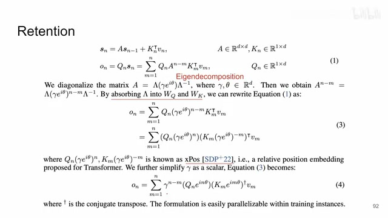
00:04:33–00:04:47 · 画面 01300:04:47–00:04:51 · 画面 014
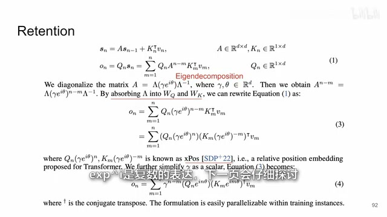
00:04:47–00:04:51 · 画面 014那么写成这样的形式之后呢，两两相乘它的特征矩阵就约掉了嘛，那么你最终形成的就是这个样子，头上有一个尾巴上有一个，中间呢是它的特征值的矩阵的一个 n-m 次方
00:04:51–00:05:07 · 画面 015
00:04:51–00:05:07 · 画面 015那么正好这里我们 A 这个矩阵呢，它的前后都有一个矩阵，那我们很自然的就想啊，我这个反正你前后两个矩阵都是学出来的嘛，我就把这个特征值矩阵也都塞回到周围的前后的两个矩阵里面，这样子我的这个公式写出来就相对简单一点嘛。所以经过这样一通操作之后，这个公式呢就写成了这个样子，那么这里矩阵的密进一步拆分，各回各家各找各妈，然后呢 N 找到 N ，M 找到 M，就写成了这个样子
00:05:07–00:05:11 · 画面 016
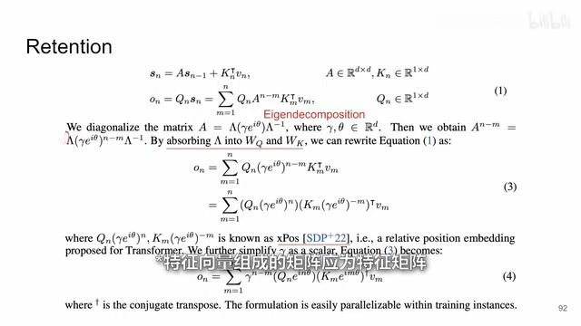
00:05:07–00:05:11 · 画面 01600:05:11–00:05:24 · 画面 017
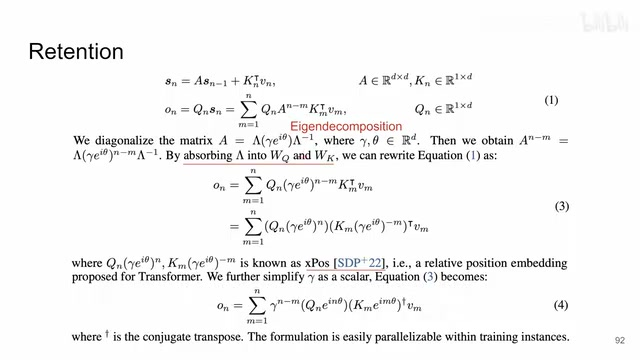
00:05:11–00:05:24 · 画面 01700:05:24–00:05:25 · 画面 018
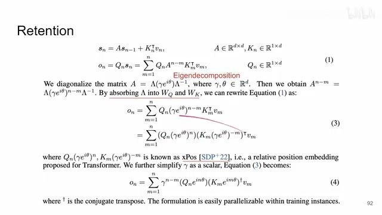
00:05:24–00:05:25 · 画面 01800:05:25–00:05:31 · 画面 019
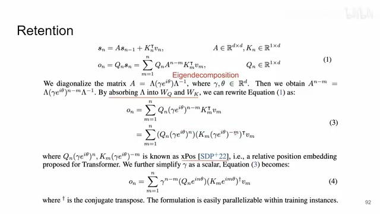
00:05:25–00:05:31 · 画面 019其中这两项它的灵感来自于 XPOS 我们来仔细来看包括其实一开始有朋友就应该有疑惑为什么我们一个特征值矩认写成了这个样子这里我们是考虑最一般的情况下那么这个特征值它有可能是一个复数为了优雅的表达这个复数我们写成了这个形式这个 I 是那个虚数单位你就把它理解成复平面上的一个极坐标
00:05:31–00:07:27 · 画面 020
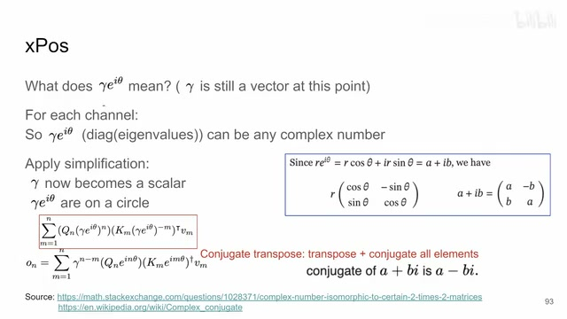
00:05:31–00:07:27 · 画面 020这是极坐标的长度这是极坐标的朝向同时因为我们有很多个特征值这里的θ和γ都是 vector 这个时候这个数其实就是表达了一个在复平面上任意的一个数然后它其实是填充在矩阵的对角线上的这个都是线性代数的基础对于每一个特征值来说我现在假设它的γ都是同样的一个定值那么在这个假设下，你所有的特征值都会落到一个圆上对吧，因为你想它们的长度都是固定的，唯一区别的就是一个角度了，那么标量这个东西处理起来就很方便了，你把它全部都拿出来拿到最开始，那么然后我们来看这个角度怎么样优雅的把这个负号拿出来
就是转制变成了共恶转制，因为共恶转制本质就是转制加共恶，那共恶的本质是什么，就是时步不变虚步的这个符号给它取反，那么把这个定义掌握好，你这个表达式就能够写得非常优雅，虽然到后面你实际写代码的时候根本用不到这样优雅的表达式，那么现在呢我们说回到这个复数，我们引入了复数，难道这意味着我们需要在我们的矩阵中真的是维持一个复数的矩阵吗当然并不是这样的因为我们在日常生活中常常是用一个 2 乘 2 的这样的一个旋转矩阵来去表达这个复数那因为你可以去试一下你对两个复数做各种操作本质上呢跟对这种矩阵做各种操作是没有区别的哎这是一个非常好的性质这就让我们的实际的矩阵中全都是实数但是呢它依然保留了这个复数的含义那么下面我们就来看具体的这个 expose
00:07:27–00:07:35 · 画面 021
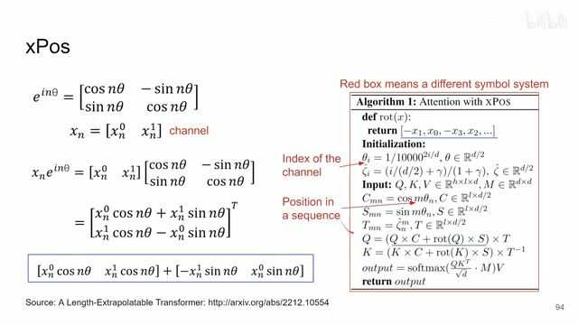
00:07:27–00:07:35 · 画面 021它的实现就是，你看这个是我们想要表达的一个值，我现在把它写成了这样一个二乘二的旋转矩阵的形式，那么对于一个在序列中位置为 n 的 token，我们假设这是最简单的情况，我们假设它有两个 channel，那么你的这个表达式写出来是什么样子呢，对吧，写出来最后是这个样子，那注意这里我把这个行矩阵写成了这个列的形式，这样子排版比较方便
00:07:35–00:07:36 · 画面 022
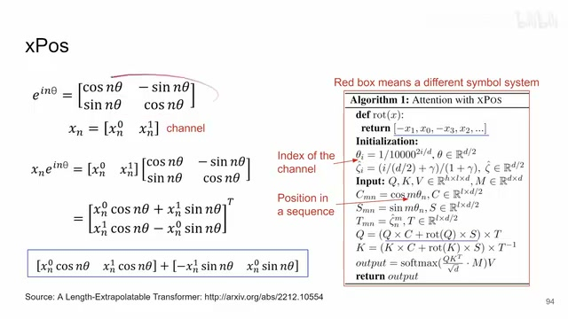
00:07:35–00:07:36 · 画面 02200:07:36–00:08:31 · 画面 023
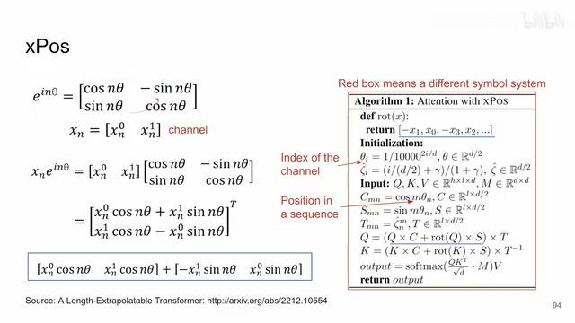
00:07:36–00:08:31 · 画面 023那么当然在实际操作中，你只有这样一个频率，这样一个角度是不行的，因为这样你的网络就没有办法区分一个周期和两个周期这样的距离的区别，所以呢在实际使用中呢，往往都是我们通过增加这个 channel 的数量，那么前两个 channel 对应的是一个频率，那么后面再两个 channel 对应一个相对更高的频率，那再往后更高的频率，这样子，那这样子通过一系列组合很多个频率不同的 cos3 的组合，就把这个位置的编码真正的给它编出来了那么我们来看到这个 XPOS 里面的这个算法注意这个是我直接从 XPOS 里面的那个文章中截出来的所以它的这个符号系统呢跟我们的这个本文是不太一样的首先我们要说实话这个角度然后我们刚刚说了我们希望有不同的频率嘛来分层注意这里这个 i 呢它就不是复数单位了它是它是这个角速度的下标啊你可以看到它实际的实现你可以看到它实际的实现呢是这个样子那么然后你就构建你的 cos 和 sin 这样的一个矩阵
00:08:31–00:08:32 · 画面 024
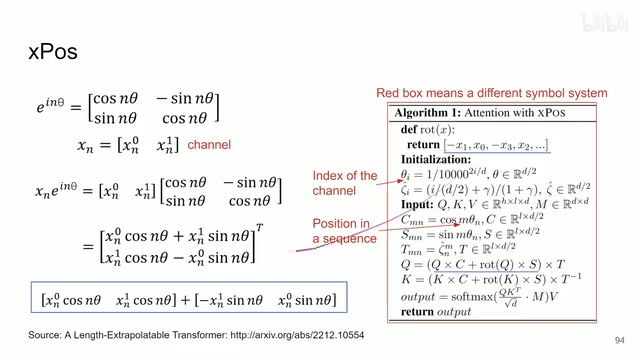
00:08:31–00:08:32 · 画面 02400:08:32–00:09:23 · 画面 025
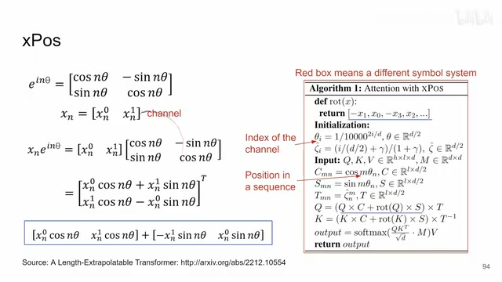
00:08:32–00:09:23 · 画面 025你在第 M 个 token 第 N 个这个角速度上它的这个 cos 长这个样子它的 sin 长这个样子那注意这里为什么我说是 n 的角速度而不是说 n 个 channel 呢因为角速度的数量是 channel 的一半你在实际使用的时候它的这个矩阵的排列是比如说这个是θ1 它是一个 cosθ1 cosθ1 然后 cosθ2 cosθ2 这样的排列你通过这样的一个复制的形式把你的这个 channel 的数量从 2 分之 d 变成了 d 那么然后你看它怎么做这个矩阵的操作
00:09:23–00:09:24 · 画面 026
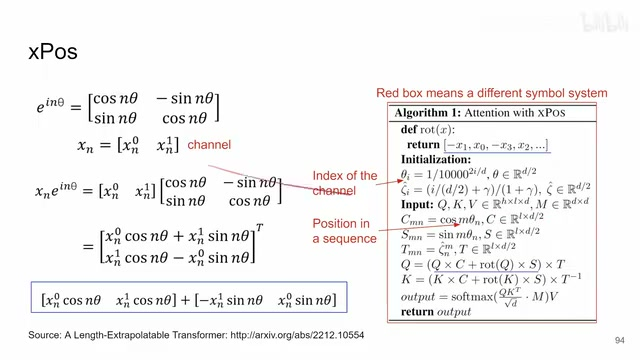
00:09:23–00:09:24 · 画面 02600:09:24–00:09:53 · 画面 027
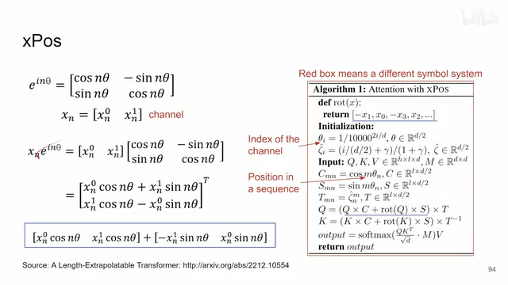
00:09:24–00:09:53 · 画面 027那这一行呢我对这个 q 来做对吧那么这个 q 乘以这个 cos 加上这个 rotate 这个 q 乘以这个 sin 那么这个 rotate 是什么样的函数呢你可以看到它是这个样子的它在 channel 这个层面上把你的 channel 的顺序调换一下那么为什么要做这样的调换它实际表达的意义是什么呢我们来看到这边对吧这个蓝色的框里面你一开始跟 cos 做计算的时候就是第一个对第一个但是你这里和 sign 做计算的时候你考虑到矩阵在 channel 上的变换那么它实际写出来是这个样子我这里还是只写了一个频率一个速度的情况下那么你发现把这两个加起来按照这样的方法加起来是不是就是它了呢其实不是为什么不是呢因为这两个 channel 的顺序是交换掉的你看在下面是这个 channel 靠前这个 channel 靠后一点但是这也不影响它本质上都是一样的
00:09:53–00:09:56 · 画面 028
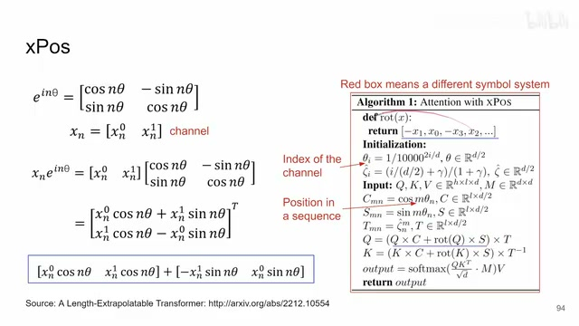
00:09:53–00:09:56 · 画面 02800:09:56–00:09:58 · 画面 029
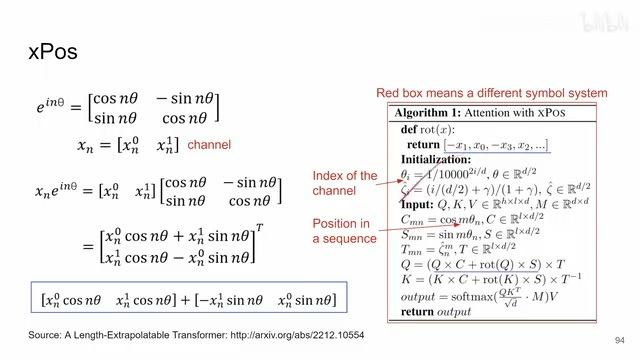
00:09:56–00:09:58 · 画面 02900:09:58–00:10:00 · 画面 030
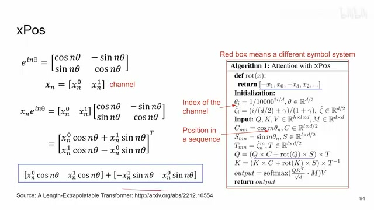
00:09:58–00:10:00 · 画面 03000:10:00–00:10:21 · 画面 031
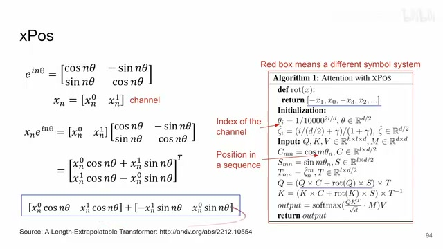
00:10:00–00:10:21 · 画面 031那么这个呢就是 XPOS 它最底层的实现那么然后呢我们就来拿它写真正的 retention 那之前我们这个式子展示过了它呢只是一个针对特定的这个 DN 个 token 的情况下我现在把这个情况幻化到整个序列就是我有一个序列那这个 token 的序列呢 X 它先做投影得到的是这个里面的 Q 这个 K 也是投影 V 也是投影那么然后呢要乘上这个我们刚刚说的这个 XPOS 这个编码是这个样子
00:10:21–00:10:22 · 画面 032
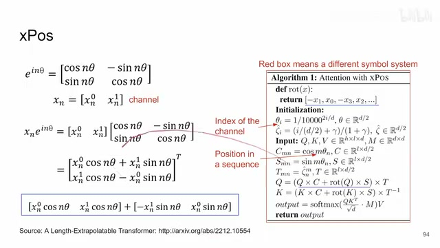
00:10:21–00:10:22 · 画面 03200:10:22–00:10:24 · 画面 033
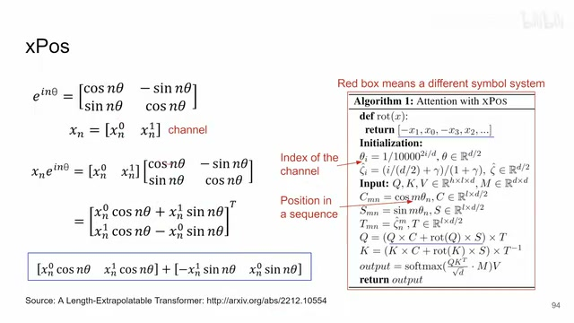
00:10:22–00:10:24 · 画面 03300:10:24–00:10:43 · 画面 034
00:10:24–00:10:43 · 画面 03400:10:43–00:10:49 · 画面 035
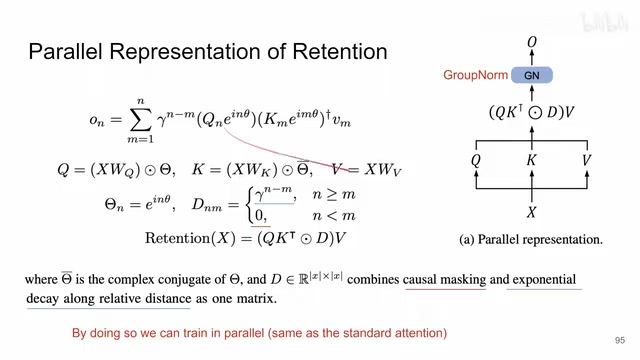
00:10:43–00:10:49 · 画面 03500:10:49–00:11:22 · 画面 036
00:10:49–00:11:22 · 画面 036那我们定义这样的一个矩阵叫做这个 Q 那同样的这个但是注意这里我们乘的是共恶也就是负θ那么这个是 K 矩阵那么然后呢你按照每一个 token 的位置把这个 Q 还有 K 的转制给它乘起来就好了嘛那么剩下我们还有谁没处理呢这个 V 它是好说的对吧我们直接一个投影也是把它变成矩阵的形式就可以了那么最棘手的呢就是这个γ你可以看到在我们这个情况下 m 是应该始终小于 n 的所以它变成矩阵之后它应该是一个三角阵你看到长这个样子这个 n 和 m 是两个 token 的 index 当 n 大于 m 的时候它就是我们正常的这个值当 n 小于 m 的时候它呢取到 0 因为我们就根本没有算这样的一项
00:11:22–00:11:27 · 画面 037
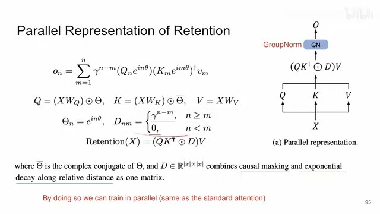
00:11:22–00:11:27 · 画面 03700:11:27–00:11:28 · 画面 038
00:11:27–00:11:28 · 画面 03800:11:28–00:11:32 · 画面 039
00:11:28–00:11:32 · 画面 03900:11:32–00:11:34 · 画面 040
00:11:32–00:11:34 · 画面 04000:11:34–00:11:35 · 画面 041
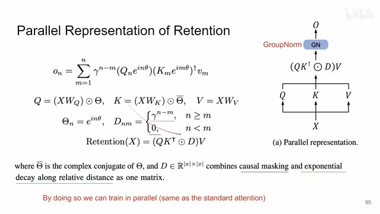
00:11:34–00:11:35 · 画面 041那么这样子这个式子的 retention 写出来就是这个形式那么我们应该如何理解这个东西它就是你 self-attention 里面的那个 causal mask 就是你当前的 token 在计算的时候它不可能考虑未来的 token 是什么但是它是要考虑过去的 token 是什么那么同时蓝色的线标记的 exponential decay along relative distance 就是这样的体现
00:11:35–00:11:37 · 画面 042
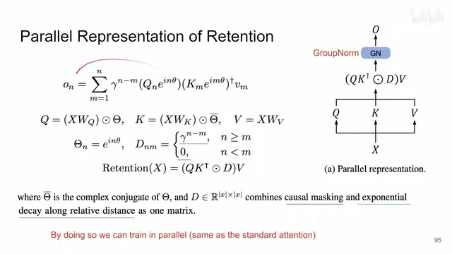
00:11:35–00:11:37 · 画面 04200:11:37–00:11:39 · 画面 043
00:11:37–00:11:39 · 画面 04300:11:39–00:11:51 · 画面 044
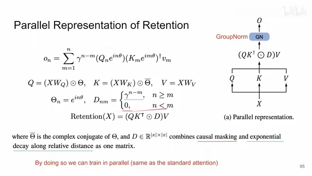
00:11:39–00:11:51 · 画面 04400:11:51–00:11:52 · 画面 045
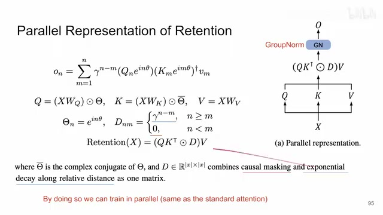
00:11:51–00:11:52 · 画面 04500:11:52–00:11:58 · 画面 046
00:11:52–00:11:58 · 画面 046那么这个就是本文最基本的 retention 的写法那么还是类比 attention 你在训练的时候只是走一遍 forward 就是把一串 token 投影到另一串 token 然后做 cross entropy 这种 loss 所以这个也是一样的把一串 token 变换到另一串 token 注意记得这里变换完之后加一个 groupnum 所以这里叫做 parallel representation 这个是只在训练中发生的我们训练的时候跟 attention 就是一模一样了
00:11:58–00:11:59 · 画面 047
00:11:58–00:11:59 · 画面 04700:11:59–00:12:22 · 画面 048
00:11:59–00:12:22 · 画面 04800:12:22–00:12:24 · 画面 049
00:12:22–00:12:24 · 画面 049那么当然在此基础上作者还对这里面的内容做了很多的 Normalization，那比如说最经典的像这个 Attention 里面也有的，那么这个 D 矩阵它也不是直接用的，它也要做 Normalization。那这个 Retention Score 就是这个 QK 转制乘起来，然后再乘上这个 D 这个东西，这个 Retention Score 它呢也是做了一个 Normalization。那么这些 Normalization 的具体的实现，我们等到后面说到代码部分的时候，我们来仔细来看。
00:12:24–00:13:15 · 画面 050
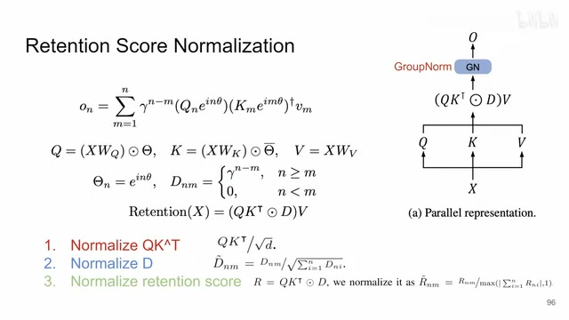
00:12:24–00:13:15 · 画面 050那么总之现在的情况就是，我们的 retention 可以和 attention 一样在训练的时候处理很多个 token，但是在实际推断的时候我们也是要像 attention 一样把所有的过去的 token 都找出来翻一翻晒一晒洗一洗，是要这样吗？那当然不能这样，这样和 attention 还有什么区别呢？和过去的这些同质一样的 token 在一起，怎么能当好一个 language model 呢？
所以针对 influence 的时候，本文的 retention 它有一个非常好的构型，就是我们一开始说到你是维护了一个 state，一个新的 token 进来更新这个 state，然后你生成的 token 是根据新的 state 来生成的这样一个 token，我们有这么一个好的性质。所以这也就意味着你的 retention 的生成的过程其实只依赖于上一个 recurrent state。
00:13:15–00:13:32 · 画面 051
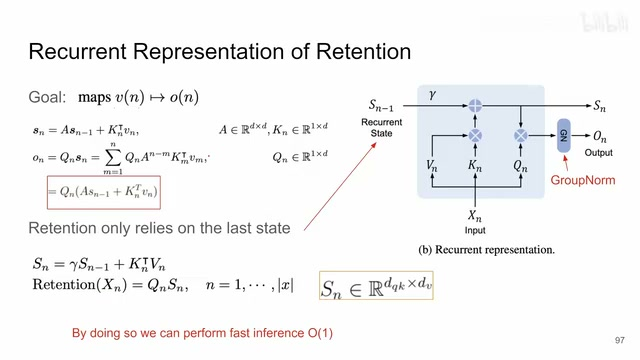
00:13:15–00:13:32 · 画面 05100:13:32–00:13:33 · 画面 052
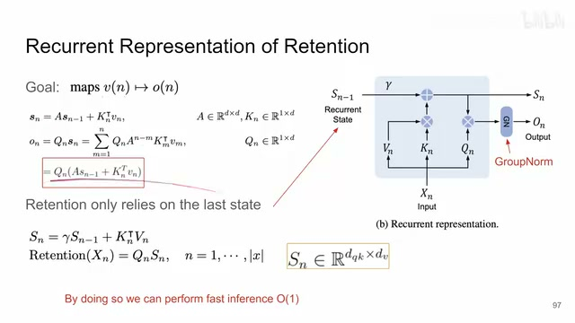
00:13:32–00:13:33 · 画面 05200:13:33–00:13:42 · 画面 053
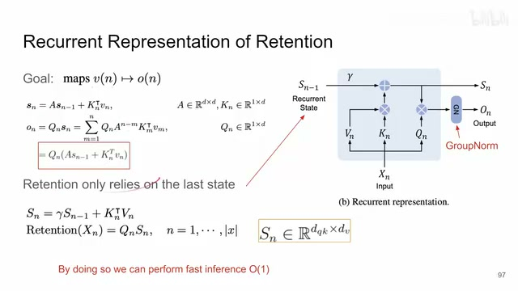
00:13:33–00:13:42 · 画面 053相当于你把过去所有的这些 token 的精华都浓缩到这个 state 里面，然后每次进来一个新的 token 更新一下这个 state，然后再基于这个 state 去生成你的输出就好了。那么这个就是最经典的 recurrent neural network RNN 这种东西的这种构型，当然你记得这里输出的时候也是要加上 group normalization。
00:13:42–00:13:44 · 画面 054
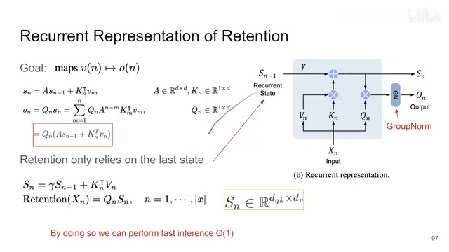
00:13:42–00:13:44 · 画面 05400:13:44–00:14:42 · 画面 055
00:13:44–00:14:42 · 画面 055你这样操作的时候，你 influence 的时候也就是你 autoregressively 生成的时候，它的速度就是非常快的一个 token 一个的 10 分甚至 9 分快速。那么这种形式作者叫它 recurrent representation of retention。所以你看它既保留了像 transformer 一样的一次前向传播就能够把所有的 token 都训练出来，你训练一个 sequence 之后只需要做一次前向传播，同时它也有 recurrent 这样的性质，指的是你在推断的过程中只依赖于过去的一个状态，而不是把过去的所有的整个轨迹都找出来，这个是本文最核心的地方。那么以上这两个就是 retention 的基本的构型。
但是呢，我们实际在训练的时候可能这个文本非常长，这个序列真的很长，还是有可能出现塞不下的情况，那怎么办呢？这里呢作者说啊，我们为什么不把这个 recurrent 和这个 parallel 结合在一起呢？那这个呢就是 chunkwise 的 recurrent，它的意思就是说我把这个长序列分成一个一个的 chunk，就相当于 local attention 的样子，那就像这个样子，每一个 chunk 它的尺寸是比一个 token。
00:14:42–00:14:55 · 画面 056
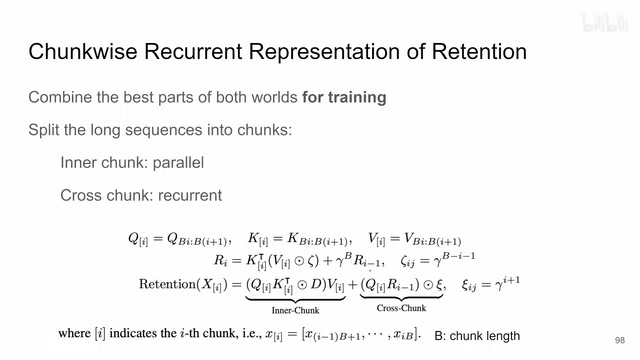
00:14:42–00:14:55 · 画面 05600:14:55–00:14:56 · 画面 057
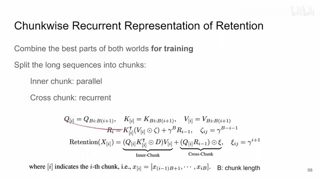
00:14:55–00:14:56 · 画面 05700:14:56–00:15:26 · 画面 058
00:14:56–00:15:26 · 画面 058你原来的这些 qkv 都给它结成一块一块的，那么对于每一块的输出来说肯定有这个 chunk 以内的 retention 作为打底，同时它是在这个基础上加上了一个 cross chunk 也就是这个 recurrent representation，只不过这个 recurrent representation 现在不是 token 的尺度了，它是一个 chunk 的尺度，这个时候它的式子写成了这个样子，我们来看它多了很多个这种不同的 decay factor，我们具体来看它们都是些什么东西。
00:15:26–00:15:42 · 画面 059
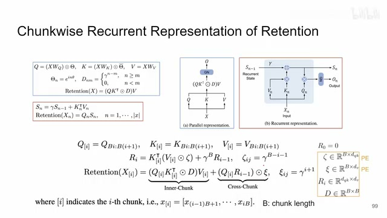
00:15:26–00:15:42 · 画面 059首先就像我们刚刚说的，对于每一个 chunk 里面，你就做标准的 parallel representation 就好了，这个就先放到一边。那么这个是我们刚刚介绍的 recurrent representation，对于每一个一个一个的 token 来讲的，recurrenttokenwise recurrent。那么我们现在不妨把这个 recurrent 给它打开，不断的写下去，比如说写了一步就是这个样子。
00:15:42–00:16:51 · 画面 060
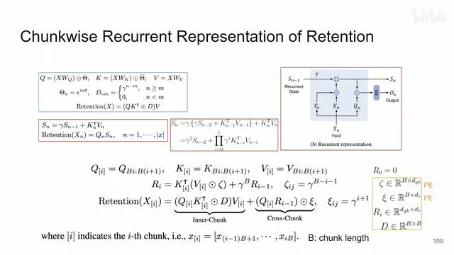
00:15:42–00:16:51 · 画面 060那么根据我们 chunk 和 chunk 之间的跳跃，它们之间就隔了 big tokens，所以你把这个数带成 b 这一项对应的。就是这个位置，那么这个呢对应呢就是 Zeta 这个矩阵，你可以看到呢，Zeta 它的尺寸应该是一个 B 乘以这个 D 这样的一个尺寸。那这里我们 Q 和 K 的下标表示这个 Query 和 Key 它们两个的这个尺寸，因为它有可能和 Value 的这个尺寸是不一样的，所以我这里稍微做一个区分。你看到它这个矩阵的取值只跟它所在的行有关，它所在的行对应的就是这个 Token 在这个 Chunk 中的位置嘛。
所以你看它写出来是这个样子，本质上就是上面这个东西，只不过我这里这个 i 和它这个 i 对吧，正好是顺序是反着的，你自己调换一下就好了。那么这个是这一项，那么然后我们再看这一项，就是从上一个 state 去到这个 state，还是既然我们跨越了是一整个 chunk，一个 chunk 里面有 b 个 token，这是跨越了两个对吧，这是 2。所以呢这里跨越了 b 个就是 b。
这个呢是如何把这个 tokenwise 的这个 recurrent 变成了这个 chunkwise 的 recurrent。然后你这里算出来的一个最后的这个类似于 sn 这样的东西，这里叫做 ri，它呢跟这个 trunk 所在的这个 query 也是乘一下。那么和它类似的这里还有一个 c，你看到这个 c 呢，它的尺寸是这个样子的，也是它只在这个行也就是在 tokenindex 上来更改这个 gamma，为什么要有它。
00:16:51–00:16:52 · 画面 061
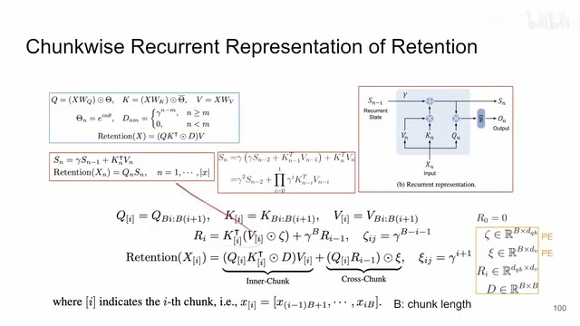
00:16:51–00:16:52 · 画面 06100:16:52–00:17:00 · 画面 062
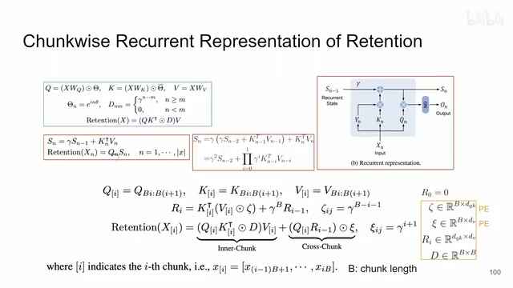
00:16:52–00:17:00 · 画面 06200:17:00–00:17:01 · 画面 063
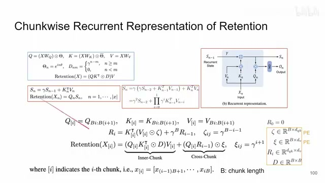
00:17:00–00:17:01 · 画面 06300:17:01–00:17:33 · 画面 064
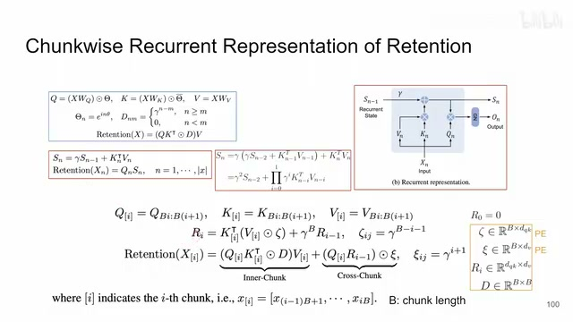
00:17:01–00:17:33 · 画面 064因为你跳到 RI-1 的时候，其实它代表的是你这个 chunk 最开始的那个 token 它的这个坐标也好，这个 positional encoding 也好，你现在要把整个 chunk 里面的内容都推断出来。那么对于这个第一个 token 之后的这些 token，它同样的也要施加这个 decay 这个 gamma。所以你看到在一个 chunk 之内，它也要加这样的调整。
00:17:33–00:17:34 · 画面 065
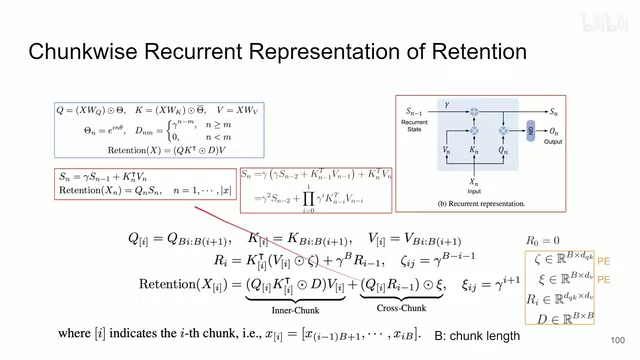
00:17:33–00:17:34 · 画面 06500:17:34–00:17:46 · 画面 066
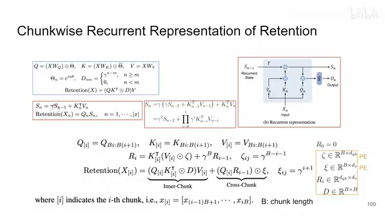
00:17:34–00:17:46 · 画面 066那么最终呢，你的 retention 就是就是 chunk 里面呢加上过去的 chunk 跳过来的。那么这个呢就是本文最复杂的 chunk-wise recurrent representation，它是只用在训练当中用来处理长序列的。那么最后的最后一点细节就是 getted multiscale retention，那它分两部分，一个是 getted，一个是 multiscale。我们先看 multiscale，就是你像 multi-head self-retention 一样，它每个 head 我们希望它处理不同的信息。那这里呢同样也是把你的 tensor 分成各个 head。
00:17:46–00:17:47 · 画面 067
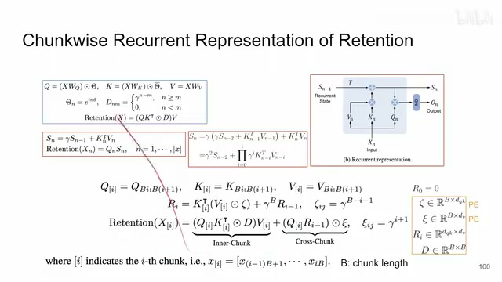
00:17:46–00:17:47 · 画面 06700:17:47–00:17:51 · 画面 068
00:17:47–00:17:51 · 画面 06800:17:51–00:18:53 · 画面 069
00:17:51–00:18:53 · 画面 069只不过这里它使用不同的 Gamma。不同的 Decay它其实控制的就是。你的一个 Token 和另一个 Token。随着它们距离的增加。它们的影响相互的影响的衰减。你在不同的 Head 里面使用不同的 Gamma那么它就希望不同的 Head。能捕捉到不同的信息。那么最终它的 Gamma 的取值。是长这个样子的这是一个跟 Head 一样长的。
这么一个序列你就做 Retention然后每一个 Head做自己的 Group Normalization然后再看 Gated 的部分就是我维护两个这样的矩阵。原始的输入乘上这个矩阵。过一个 Swish 这个激活函数。调制一下你的 Retention 的输出。最后再做一个投影。那么这个就是最终的。Gated Multiscale Retention
00:18:53–00:18:54 · 画面 070
00:18:53–00:18:54 · 画面 070它才是真正为用来替代。
00:18:54–00:18:58 · 画面 071
00:18:54–00:18:58 · 画面 071Self-Retention 的部分你来到整个 Retinent 的结构。
00:18:58–00:18:59 · 画面 072
00:18:58–00:18:59 · 画面 07200:18:59–00:19:03 · 画面 073
00:18:59–00:19:03 · 画面 073有 Retention有 Layer Normalization有 Skip Connection这些东西都还是在的。
00:19:03–00:19:04 · 画面 074
00:19:03–00:19:04 · 画面 074就是 Transformer 里面
00:19:04–00:19:08 · 画面 075
00:19:04–00:19:08 · 画面 075换成了这个 Gated Multiscale就有 Retention
00:19:08–00:19:23 · 画面 076
00:19:08–00:19:23 · 画面 076那么作为今年中秋节的福利。我们难得一次把这个伪代码和代码都端上来。让大家看一看比如说这里是 Parallel Retention和 Recurrent Retention这个 Decay Mask就是我们之前讲的这个矩阵。然后你 parallel 的公式就是 q 乘以 k 的转质然后再乘上 decay mask 就是这个样子然后你再最后乘上 v 做 group normalization 输出就好了那么 recurrent 它是 decay 就是 gamma 乘上 path kv 就是我们说的 state 类比于这里但是它实际并不是这个是一个 chunk 的计算
00:19:23–00:19:24 · 画面 077
00:19:23–00:19:24 · 画面 07700:19:24–00:20:22 · 画面 078
00:19:24–00:20:22 · 画面 078这个是对每一个 token 的计算这个是不一样的然后呢这里加上 k 的转制乘以这个 v 本来这里应该是转制的对吧但是实际上因为我们这里只有一个 token 它很巧妙的使用了在不同的位置插入一个新维度的方法那么对于这个 k 来说它在最后增加一个新的 dimension 而对于这个 v 来说它在倒数第二个这个位置加了一个新的 dimension 就是这个位置那这样子就自动实现了 k 和 v 它们有一个转制的效果那么这个呢是 recurrent 的部分那这里更新了 state 之后你基于当前的 state 那再乘上我们当前的这个 q 矩阵就能够得到我们想要的输出那这个是 recurrent
00:20:22–00:20:26 · 画面 079
00:20:22–00:20:26 · 画面 079那么然后呢我们发动一个超级融合把这个 parallel 和 recurrence 结合在一起生成一个这个 chunkwise retention 但是我们注意啊这个 chunkwise retention 它是指的是我之前已经推断好了一堆 chunk 我有保存好之前的那个 state 然后我再推断下一个 chunk 的时候也就是说这个也就是说这个函数它只产生一个 chunk
00:20:26–00:20:28 · 画面 080
00:20:26–00:20:28 · 画面 08000:20:28–00:20:30 · 画面 081
00:20:28–00:20:30 · 画面 08100:20:30–00:20:31 · 画面 082
00:20:30–00:20:31 · 画面 08200:20:31–00:20:34 · 画面 083
00:20:31–00:20:34 · 画面 08300:20:34–00:21:00 · 画面 084
00:20:34–00:21:00 · 画面 084那至于你训练的时候实际上是把一个长的序列分成很多个 chunk 然后一起的去生成一起的去做需要有那个 recurrence 的环节那这个代码里面是不包括的所以这里我们基本上看到就是这个 inner retention 加上这个 cross retention 就是这两个
00:21:00–00:21:01 · 画面 085
00:21:00–00:21:01 · 画面 08500:21:01–00:21:06 · 画面 086
00:21:01–00:21:06 · 画面 086然后 inner 好做嘛 cross 这里呢我就是直接写的这个式子就是上一个状态的这个 path kv 就是这个 ra-1 乘上这个 q 然后呢再乘上这个 inner decay 好的那么我们现在来看到它原始的代码如何去生成很多个 chunk 同时呢我们之前说到这些 normalization 它们是怎么体现的那我们先看 normalization 这个比较简单那这个 qkv 这个 normalization
00:21:06–00:21:07 · 画面 087
00:21:06–00:21:07 · 画面 08700:21:07–00:21:13 · 画面 088
00:21:07–00:21:13 · 画面 08800:21:13–00:21:29 · 画面 089
00:21:13–00:21:29 · 画面 089这个就是除以一个常数嘛它你把它乘在 Q 上也好乘在 K 上也好带进来再做计算就好了这个是容易的那么然后呢是这个 D 的 Normalization 那么这个你也是除以一遍就好了所以呢它并不在你的这个 genual forward 这个代码里面你看到这个代码是它在做这个 Normalization 那么这里做了每一个 chunk 里面 token 的 index 那么先生成一个三角针这个三角针它是一个
00:21:29–00:21:30 · 画面 090
00:21:29–00:21:30 · 画面 09000:21:30–00:21:34 · 画面 091
00:21:30–00:21:34 · 画面 09100:21:34–00:21:40 · 画面 092
00:21:34–00:21:40 · 画面 09200:21:40–00:21:42 · 画面 093
00:21:40–00:21:42 · 画面 09300:21:42–00:22:12 · 画面 094
00:21:42–00:22:12 · 画面 094然后呢算这个 dk 就是γ的 m-n 此方这里先把 m-n 写出来然后呢这个 m-n 出来送到我们的 dk 的头上最后呢再加这个 normalizationnormalization 你看到它是在它是把每行求和然后开根号来这样子除的那这个呢是对 d 的 normalization 那么最后呢就是这个 retention score 它的 normalization 那它呢其实来源于两部分一部分是我们 inner chunk 里面前面这三个它得到一个 retention score
00:22:12–00:23:01 · 画面 095
00:22:12–00:23:01 · 画面 095同时我们的 cross chunk 就是每一个 chunk 结束的这个 memory 这个 R 它也要做这么一个 normalization 那么我们先来看到 inner chunk 的部分这个好做这个就是那么我们先来看到 inner chunk 的部分这个都是好做的在这里因为你的一个长序列分成很多个 chunk 之后这些 chunk 它们相互之间是可以变形计算的所以在这一步到这里为止是把所有的 inner chunk 都已经算好了然后呢我们再算这个 cross chunk 也就是这个 recurrent 的这个
那这个部分它是没办法并发的，必须迭代着来。所以呢，一开始我们看到先一开始初始化这个 kv state，也就是这个 r0，一开始的记忆它是 0。然后呢，它的 normalization 它这个 scale 是 1，这么做好初始化。然后呢，对于每一个 chunk 来说，这是那个 ri-1 嘛，cross decay 就是这个γ的彼此方加上你这个特定 chunk 的这个 kv 值。注意这个 kv 值在前面已经把这个
00:23:01–00:23:02 · 画面 096
00:23:01–00:23:02 · 画面 09600:23:02–00:23:10 · 画面 097
00:23:02–00:23:10 · 画面 09700:23:10–00:23:11 · 画面 098
00:23:10–00:23:11 · 画面 09800:23:11–00:23:20 · 画面 099
00:23:11–00:23:20 · 画面 09900:23:20–00:23:21 · 画面 100
00:23:20–00:23:21 · 画面 100Decay 给它加上去了，加在这里了。那这里你只要选对应的 Chunk 就可以了。那么它算出来就是这个新的 RA 的尺寸。然后呢，你再根据这个式子把它 Normalization 那个 Scale 这个 KV Scale 给它算出来。然后呢，你就这样不断的去循环。那么最后呢，把这些 Normalization 做得好，因为你这些 Scale 都统计出来了嘛，你按照它的这个实现把 Inner 和 Cross 加起来就好了。那么这个呢就是本文最核心的 Multi Scale Retention
00:23:21–00:23:49 · 画面 101
00:23:21–00:23:49 · 画面 10100:23:49–00:24:20 · 画面 102
00:23:49–00:24:20 · 画面 102你到时候外面再加 Gate，再加 Layer Normalization，再加 Skip Connection，就把 Transformer 给它替换出来了。那么总的来说呢，就像我们视频中已经说到，这样本文的这个方法结合了 transformer 那种一次处理一个序列训练的时候那种全家桶的快感。同时呢，在做推理的时候它也有那种 auto-regressive 的这样的方法，能够帮助我们减少推理的时间。是在之前的那个 XPOS 上一个很有意思的工作的延伸。那么还是我要声明，我本身不是从事 NLP 这相关的东西的，肯定中间有理解不到位的地方。
00:24:20–00:24:27 · 画面 103
00:24:20–00:24:27 · 画面 103不过不负责任的说，这也不是什么问题，因为我未来大概率可能也是用不到这篇文章。但是你如果把这个视频看到这里，说明这个视频可能对你还是有用的。那么还是跟我们之前所有的在节假日发布的视频一样，那么如果你有节可过，我祝你中秋愉快，阖家欢乐。那么如果你像我一样在一个不过中秋节的地方，那这个视频就是录给你的。好的，那么感谢您的收看，再见。
00:24:27–00:24:47 · 画面 104
00:24:27–00:24:47 · 画面 10400:24:47–00:24:48 · 画面 105
00:24:47–00:24:48 · 画面 105转写与来源说明 · 4 个自动复核提示
保留 104 个原始语音片段，4 个片段触发自动复核提示。提示仅用于定位可能的术语、重复或识别问题，不等于已确认错误。
讲解画面为源视频截图（640×360），不是可编辑 PPT 文件。全片按每秒 2 帧扫描内容变化，逐步展开页保留；连续动画保留代表画面。清晰度受源视频限制。
原视频：paper/合集_2026-10-16_新模型/[论文速览]RetNet A Successor to Transformer for Large Language Models[2307.08621].mp4
SHA-256：ed9a97b3cd107f7b48e362f25dabc6d5c7044bae4397b20255d7844ac4228ed4
Gated Multiscale Retention
有 Layer Normalization
就有 Retention
比如说这里是 Parallel Retention
全文按视频语音与画面制作。原论文可从上方链接下载；完整资料包保留全文、原始逐字稿、字幕和校对记录。